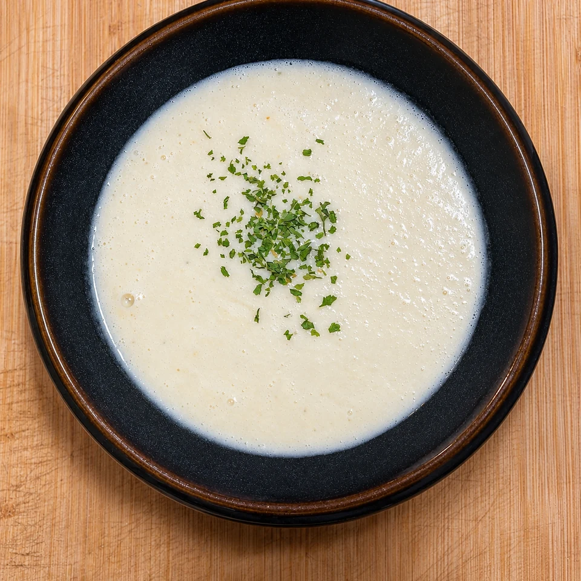

Vichyssoise ligera de puerros sin patata
Vichyssoise ligera de puerros y cebolla blanca, con 600 ml de caldo y 150 ml de nata, sin patata y para servir bien fría.
- Tiempo total
- 40 min + enfriado
- Preparación
- 5 min
- Cocción
- 35 min
- Raciones
- 4 raciones
- Dificultad
- Fácil

Ingredientes
4 raciones
Marca lo que ya tienes.
Evita dorar los puerros. Los 600 ml de caldo dan una crema ligera sin perder el sabor de la verdura.
Preparación
- Limpiar y cortar. Lava bien los puerros para retirar la tierra. Corta la parte blanca en rodajas finas y pica la cebolla blanca.
- Pochar las verduras. Derrite la mantequilla en una olla y añade puerro y cebolla. Cocina a fuego suave unos 15 minutos, removiendo de vez en cuando, hasta que estén tiernos sin tomar color.
- Cocer con el caldo. Añade los 600 ml de caldo y cuece unos 20 minutos, hasta que el puerro esté muy tierno.
- Triturar bien. Retira del fuego y tritura hasta obtener una crema fina. Para una textura especialmente sedosa, pásala por un colador.
- Añadir la nata. Cuando haya perdido algo de temperatura, incorpora los 150 ml de nata, mezcla y ajusta de sal y pimienta blanca.
- Enfriar y servir. Enfría la crema con rapidez, refrigérala unas 3–4 horas y sírvela fría. Termina con hierbas picadas si te apetece.
UN POCO DE OFICIO
Para que te salgan bien
Consejos
- Evita dorar los puerros. Los 600 ml de caldo dan una crema ligera sin perder el sabor de la verdura.
Recomendaciones
Si quieres una textura más lisa, pasa la crema por un colador fino después de triturarla.
Cómo servir y presentar
Sírvela bien fría con hierbas picadas. Refrigera la crema sin dejarla largas horas a temperatura ambiente.
MÁS SOBRE ESTA RECETA
↑ Volver a la recetaVichyssoise sin patata: una crema de puerros más ligera
En esta versión de vichyssoise el puerro es el protagonista. No lleva patata, y los 600 ml de caldo junto con 150 ml de nata crean una crema suave que se sirve fría después de reposar en la nevera.
Por qué pochar el puerro sin dorarlo
Una cocción suave mantiene un sabor delicado y evita que la cebolla o el puerro aporten notas tostadas. Remueve para que se ablanden sin cambiar demasiado de color.
Cómo conseguir una crema fina sin patata
Tritura bien cuando el puerro esté completamente tierno. Si prefieres una textura más sedosa, pasa la mezcla por un colador fino antes de añadir la nata.
Cómo enfriar y servir la vichyssoise
Una vez terminada, enfría la crema con rapidez y déjala en la nevera unas 3–4 horas. Se sirve fría, con hierbas picadas opcionales por encima.
Opiniones sobre esta receta
Consultando valoraciones…